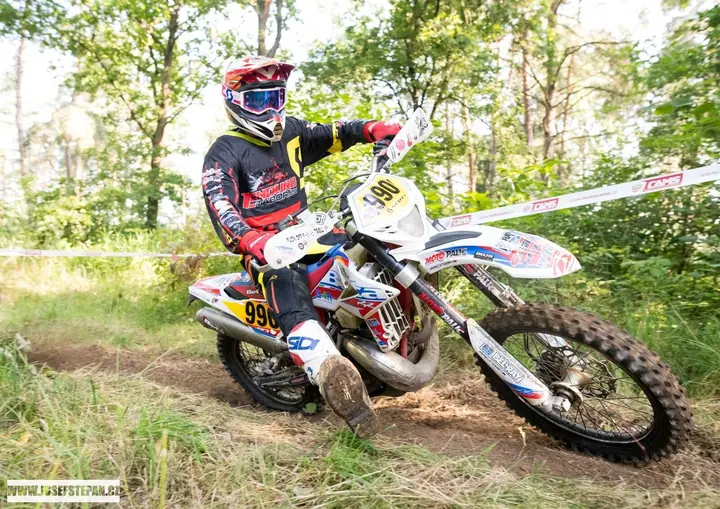
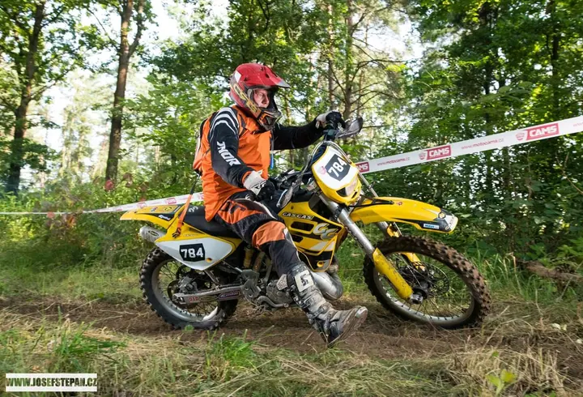

01 / 04
Fotoreportáže ze sportovních akcí
Fotím pro sportovní kluby, pořadatele, areály, jednotlivce i týmy. Nafotím reportáž z turnaje, zápasu nebo závodu, který pořádáte.
Zeptat se na termín→



Sportovní fotografie přímo z trati
Zeptat se na termín →(01) Ahoj
Jmenuji se Josef Štěpán a fotím sport . Jezdím na závody, turnaje a zápasy a fotky z nich umím vytisknout ještě na místě, dokud závodníci neodjedou domů .
(02) Co fotím
01 / 04
Fotím pro sportovní kluby, pořadatele, areály, jednotlivce i týmy. Nafotím reportáž z turnaje, zápasu nebo závodu, který pořádáte.
Zeptat se na termín→02 / 04
Fotky ukazuji v reálném čase a tisknu je přímo na místě v profi kvalitě. Nejde o statické fotky před pozadím ani o fotobudku, ale o akční snímky pořízené během závodu, turnaje nebo festivalu.
Zeptat se na termín→03 / 04
Připravím fotky do médií a pro vaše sponzory. Nafotím i další akce, které se sportem souvisí, třeba tiskové konference.
Zeptat se na termín→Dále nabízím
Fotím na sjezdovkách a zimních závodech. Fotky ze sezóny najdete v galerii SKI 2025/26 na mém e-shopu.
↗(03) Portfolio
Kliknutím fotku zvětšíte · fotografie jsou ilustrační
(04) Postup
Od první zprávy po hotovou galerii.
Krok 1 z 4
Napíšete mi, o jakou akci jde, kdy a kde se koná. Společně domluvíme, jestli chcete reportáž, přímý tisk, nebo obojí.
Krok 2 z 4
Přijedu s technikou a vyberu místa na trati nebo u hřiště, odkud je akce nejlíp vidět. Při přímém tisku připravím i tiskové stanoviště.
Krok 3 z 4
Fotím v průběhu závodu, turnaje nebo zápasu, žádné aranžované snímky. Při přímém tisku si závodníci prohlížejí fotky v reálném čase.
Krok 4 z 4
Vybrané fotky dostanete pro média a sponzory. Závodníci si fotky odnesou vytištěné, nebo si je koupí v galerii na e-shopu.
Fotky z trati, vytištěné ještě během závodu

(05) Za objektivem
Aktuálně se zaměřuji výhradně na sportovní fotografii. Fotím motokros a enduro, bikové festivaly, florbal, lacrosse, snowboard i lyžování. Moje fotky vyšly třeba v BOARD magazínu a v European Lacrosse Magazine a fotil jsem i na New Zealand Winter Games.
Fotografii jsem studoval šest semestrů na Institutu fotografických studií. Pracuji s technikou Nikon, s těly D850 a D500, objektivy od 15 do 400 mm (respektive 600 mm) a s externími blesky, které odpaluji rádiově přes Pocket Wizard. Pro radost sahám i po analogu, třeba po Nikonu FE2 nebo Pentaconu Six.
Kromě klasické reportáže nabízím přímý tisk fotografií na sportovních akcích. Závodníci si tak odvezou akční fotku ze své jízdy, vytištěnou na místě v profi kvalitě. K dispozici mám také profesionálně zařízený ateliér a mobilní ateliér vlastní konstrukce.
Josef
Josef Štěpán · Sportovní fotograf
Aktuálně se zaměřuji výhradně na sportovní fotografii. Rád ale nafotím i to, co se sportem souvisí, třeba tiskové konference.
Fotím přímo během akce, fotky ukazuji v reálném čase a na místě je tisknu v profi kvalitě. Nejde o statické fotky před umělým pozadím ani o fotobudku, ale o akční snímky ze závodu.
Fotky ze zimní sezóny jsou v galerii SKI 2025/26 na e-shopu eshop.josefstepan.cz. Novinky posílám do WhatsApp skupiny SKI FOTO INFO, do které se můžete přidat.
Fotím na Nikon D850 a D500 s objektivy od 15 do 400 mm, případně 600 mm. Používám i externí blesky Nikon s rádiovým odpalováním Pocket Wizard.
(07) Kontakt
Napište pár vět o tom, co si představujete, a termín, který se vám hodí.
info@josefstepan.cz